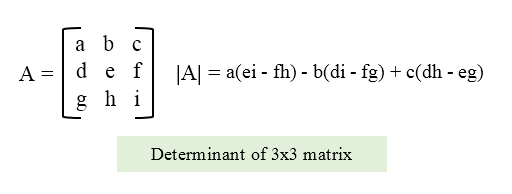

Week 9 Tasks
Arrays & Strings

Task 42
Write a program in C to read n number of values in an array and display it in reverse order
Task 43 (Experiment 17)
Write a program in C to sort elements of the array in aescending order.
There are various methods of sorting
Task 44
Write a program in C to find the second largest element in an array.
Task 45
Write a program in C for multiplication of two square Matrices.
HINT


Task 46
Write a program in C to calculate determinant of a 3 x 3 matrix.
HINT
Task 47
Write a program in C to find the length of a string without using library function
HINT
Strings end with NULL character $ \0 $

Task 48 (Experiment 18)
Write a program in C to check if the entered string is palindrome or not.
HINT
A palindrome is a word, number, phrase, or other sequence of characters which reads the same backward as forward, such as madam, racecar.
Task 49
Write a program in C reverse a string using string.h library